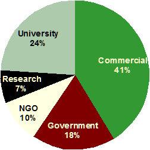
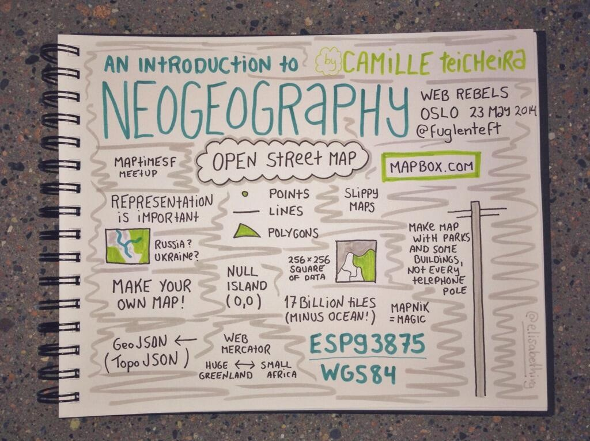

Intro Ruimtelijke Open Data
(Bring Your Own Device)
Paul van Genuchten / @pvangenuchten license: CC-BY
Geo Standaarden Complex?
Geo standaarden worden buiten (en binnen) het werkveld als complex ervaren...

En dat is misschien ook wel zo...
- Materie is vrij complex (projecties, xml-encodings)
- Data providers publiceren de data met een eigen (geo) bril
- Vertraagde implementatie in gangbare software
- Interpretatieverschillen
- Grote bestanden
- Academische inslag
Hoe gaan we dat oplossen?
- Providers stimuleren data beter te presenteren (eenvoudige formaten)
- Data portalen meer opties geven om data te extraheren
- Marktpartijen bieden vereenvoudigde diensten aan op Open Data
- Betere documentatie / onderwijs
De OGC API(s)
OGC = Open GeoSpatial Consortium
WMS
WMTS
WFS
WCS
CSW
WPS
SOS
GeoSparql
Encodings voor ruimtelijke data
- GML / KML / WKT / O&M / GeoJSON
WMC / OWS_Context
Open Data Community komt met alternatieven
aka NeoGeography
Source Twitter:@elisabethivg
OpenStreetMap
- Volunteered data op basis van wiki-principes
- Veel gebruikt als achtergrond kaart, routering en adres-naar-punt
- Inzet volunteers bij rampen
Geojson.org
- Community standards
- geojson, topojson, cartoCSS, tilejson, datapackage.json
NLExtract
CitySDK
JSON-LD
Open Geo Data Vinden
nationaalgeoregister.nl
- Open Geo Data portaal
- Publicatiepunt INSPIRE richting Europa
- 7000 datasets
- Ruimtelijke data bekijken, combineren, downloaden
- dupliceert naar data.overheid.nl
provinciaalgeoregister.nl
pdok.nl
Open Data Explosie
- Veel open geo data afgelopen jaren
- Enerzijds beleid regering
- Anderzijds door Europese INSPIRE regelgeving
INSPIRE, Open Data en Europa
- NL voorop met Open Data in INSPIRE context
- NL kiest voor minimale implementatie
- Soms door Open Data juist minder informatie
INSPIRE als keurmerk voor Open Geo Data
- Aanmerkingsproces
- Quality of services
- Harmonisatie
Data specificaties

Aangemerkte data providers
- EZ, CBS, RVO, KvK
- IenM, RWS, RDW, Prorail
- RCE
- Defensie - Hydrografische dienst
- Kadaster
- TNO, RIVM, KNMI
- Provincies
- Waterschappen
- Kabel bedrijven (Telecom/Nuts)
- Gemeenten
Open Geo Data Downloaden
- Download (Atom)
- WFS (WCS/SOS)
- Filteren
- Converteren
- Join, Group, Union
Qgis

- Kaarten om te printen
- Data bekijken vanuit NGR
- Data downloaden/converteren
GDAL/OGR
- Commandline transformatie
- Bindings voor python, java, .net, ruby
- ogr2ogr file.json file.gpkg -f geojson
Nationaal Georegister

- Extract data uit WFS optie
- Beschikbare projecties en formaten afhankelijk achterliggende WFS
stetl.org
- Streaming ETL (INSPIRE / Basisregistraties)
- Pure XSLT (& OGR & Python)
GeoKettle / Talend / Hale

- GUI gebaseerde ETL
Open Geo Data Visualiseren

Desktop
- QGis / UDig / GVSig / Gaia / Mapwindow
- Google Earth
Web
- Server: GeoServer, Mapserver, Mapnik, QGis, deegree
- Client: Leaflet, OpenLayers, GGL
- Cloud: CartoDB, MapBox